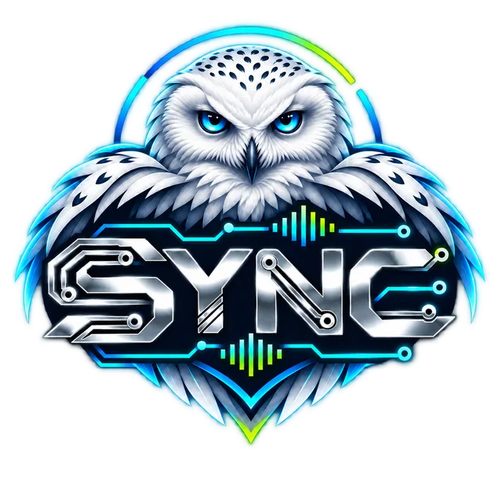

Use no Microsoft Edge para ouvir vozes neurais PT-BR como referência e treinar seu pitch de 3 minutos.
Pronto. Escolha “Ouvir referência” para escutar o pitch inteiro ou “Modo Teleprompter” para treinar falando.